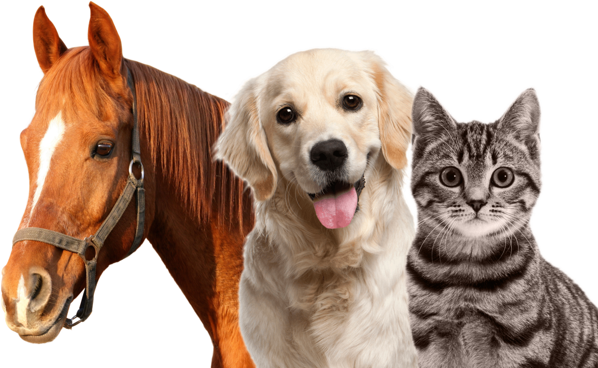

Домашние животные: виды, происхождение, интересные факты

История:
Еще несколько тысяч лет назад древний человек делал первые шаги по приручению диких животных,
чтобы использовать их в своих целях.
А сегодня уже сложно представить нашу жизнь без домашних
питомцев, словно они всегда были верными спутниками людей. Изначально человек стремился получить
что-то ценное от животных, обеспечивая их кровом и пищей. Однако, по данным антропологии,
в древности они также служили источником эстетического удовольствия.
Кто такие домашние животные?
Домашними называются животные, которых приручил человек, ухаживая за ними и предоставляя
им пропитание. Все одомашненные виды и выведенные на их основе искусственно породы использовались с
целью получения материальной выгоды или удовольствия.
Они становились хорошими компаньонами для человека,
скрашивая его жизнь. Процесс размножения животных легко проходит даже вне природных условий. Контролируя его,
люди создают породы с нужными свойствами.